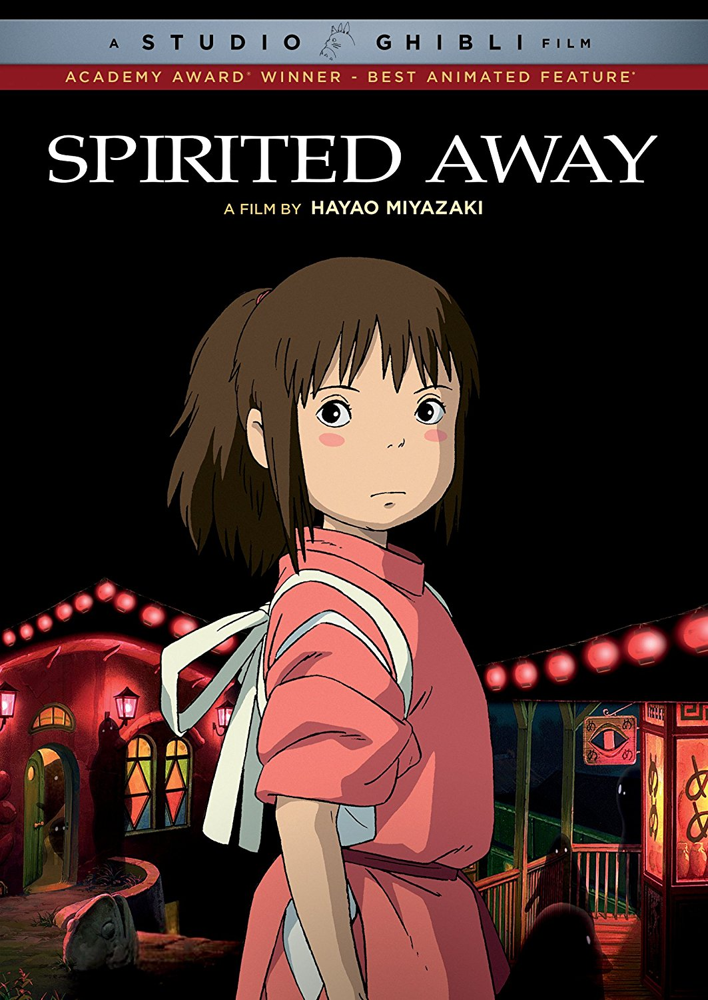
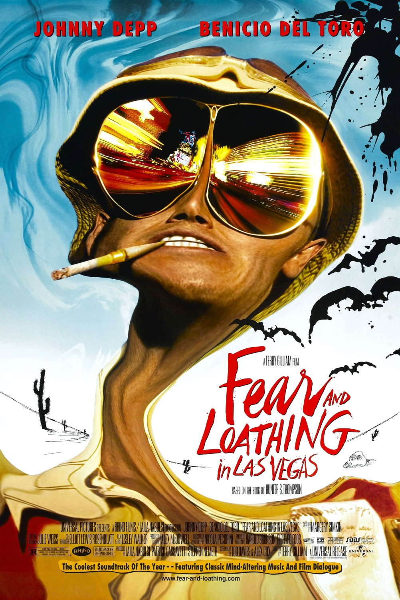
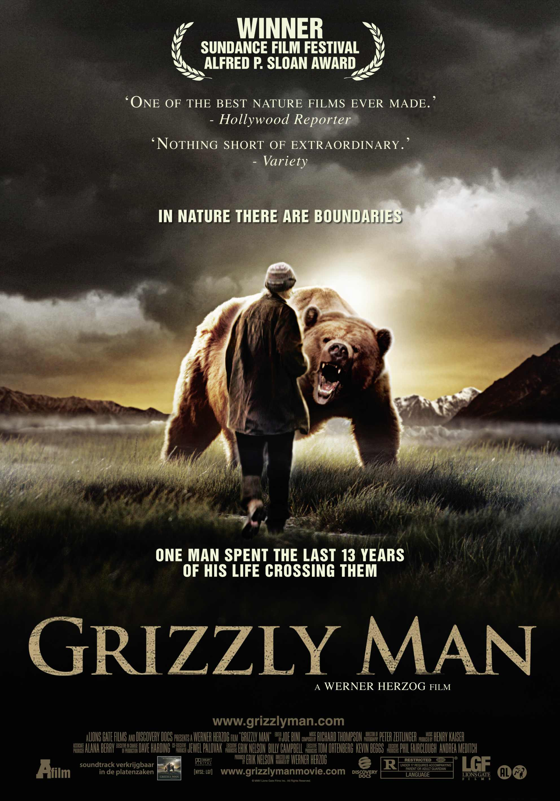

Clari
Tech-Psych
Developer-To-Be
My Favorite Movies
|  |
Spirited Away"During her family's move to the suburbs, a sullen 10-year-old girl wanders into a world ruled by gods, witches, and spirits, and where humans are changed into beasts." |
|  |
Fear & Loathing in Las Vegas"Raoul duke is a drug addled gonzo journalist. he is sent to cover a motorcycle race as an article for his magazine, but then the situation escalates into him and his psychotic attorney searching for the American dream, aided by almost every drug known to man in the boot of his red convertible." |
|  |
Grizzly Man"Pieced together from Timothy Treadwell's actual video footage, Werner Herzog's remarkable documentary examines the calling that drove Treadwell to live among a tribe of wild grizzly bears on an Alaskan reserve. A devoted conservationist with a passion for adventure, Timothy believed he had bridged the gap between human and beast. The footage he shot serves as a window into our understanding of nature and its grim realities." |